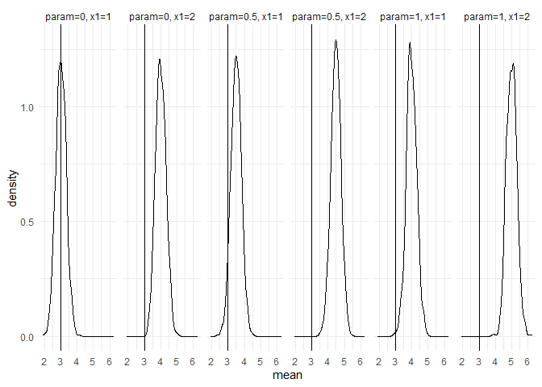
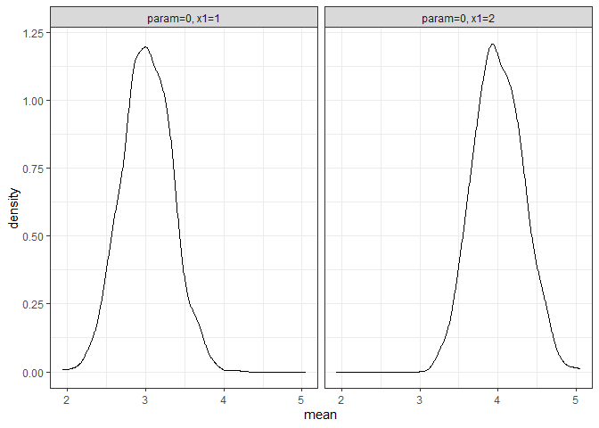
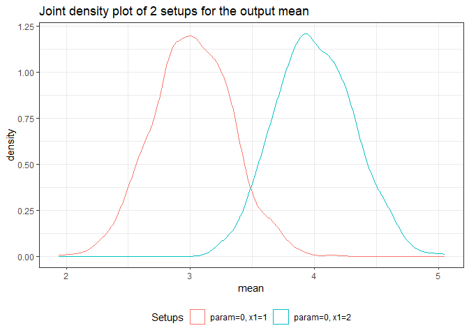
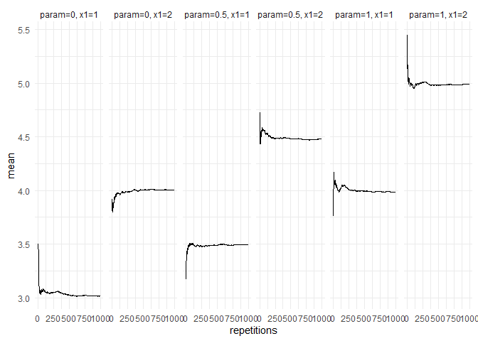
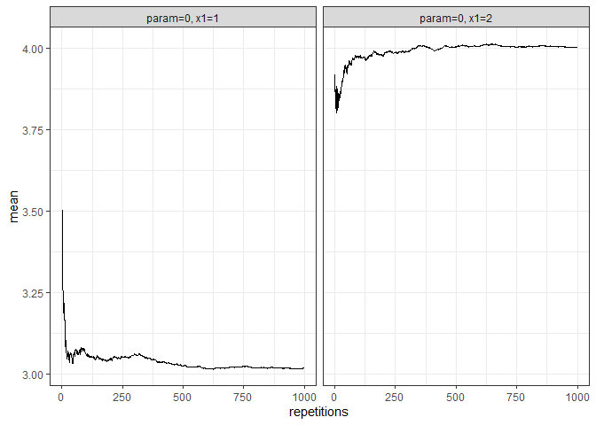
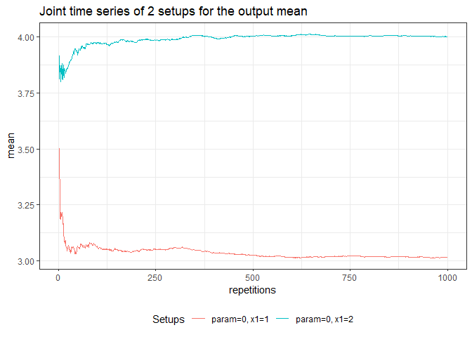

Monte Carlo Simulations aim to study the properties of statistical inference techniques. At its core, a Monte Carlo Simulation works through the application of the techniques to repeatedly drawn samples from a pre-specified data generating process. The tidyMC package aims to cover and simplify the whole workflow of running a Monte Carlo simulation in either an academic or professional setting. Thus, tidyMC aims to provide functions for the following tasks:
- Running a Monte Carlo Simulation for a user defined function over a parameter grid using
future_mc() - Summarizing the results by (optionally) user defined summary functions using
summary.mc() - Creating plots of the Monte Carlo Simulation results, which can be modified by the user using
plot.mc()andplot.summary.mc() - Creating a
LaTeXtable summarizing the results of the Monte Carlo Simulation usingtidy_mc_latex()
Installing tidyMC
Until now, the tidyMC package is not on CRAN, thus you need to download the development version from GitHub as follows:
# install.packages("devtools")
devtools::install_github("stefanlinner/tidyMC", build_vignettes = TRUE)Afterwards you can load the package:
Example
This is a basic example which shows you how to solve a common problem. For a more elaborate example please see the vignette:
browseVignettes(package = "tidyMC")
#> starte den http Server für die Hilfe fertigRun your first Monte Carlo Simulation using your own parameter grid:
test_func <- function(param = 0.1, n = 100, x1 = 1, x2 = 2){
data <- rnorm(n, mean = param) + x1 + x2
stat <- mean(data)
stat_2 <- var(data)
if (x2 == 5){
stop("x2 can't be 5!")
}
return(list(mean = stat, var = stat_2))
}
param_list <- list(param = seq(from = 0, to = 1, by = 0.5),
x1 = 1:2)
set.seed(101)
test_mc <- future_mc(
fun = test_func,
repetitions = 1000,
param_list = param_list,
n = 10,
x2 = 2,
check = TRUE
)
#> Running single test-iteration for each parameter combination...
#>
#> Test-run successfull: No errors occurred!
#> Running whole simulation: Overall 6 parameter combinations are simulated ...
#>
#> Simulation was successfull!
#> Running time: 00:00:05.836134
test_mc
#> Monte Carlo simulation results for the specified function:
#>
#> function (param = 0.1, n = 100, x1 = 1, x2 = 2)
#> {
#> data <- rnorm(n, mean = param) + x1 + x2
#> stat <- mean(data)
#> stat_2 <- var(data)
#> if (x2 == 5) {
#> stop("x2 can't be 5!")
#> }
#> return(list(mean = stat, var = stat_2))
#> }
#>
#> The following 6 parameter combinations:
#> # A tibble: 6 × 2
#> param x1
#> <dbl> <int>
#> 1 0 1
#> 2 0.5 1
#> 3 1 1
#> 4 0 2
#> 5 0.5 2
#> 6 1 2
#> are each simulated 1000 times.
#>
#> The Running time was: 00:00:05.836134
#>
#> Parallel: TRUE
#>
#> The following parallelisation plan was used:
#> $strategy
#> multisession:
#> - args: function (..., workers = availableCores(), lazy = FALSE, rscript_libs = .libPaths(), envir = parent.frame())
#> - tweaked: FALSE
#> - call: NULL
#>
#>
#> Seed: TRUESummarize your results:
sum_res <- summary(test_mc)
sum_res
#> Results for the output mean:
#> param=0, x1=1: 3.015575
#> param=0, x1=2: 4.003162
#> param=0.5, x1=1: 3.49393
#> param=0.5, x1=2: 4.480855
#> param=1, x1=1: 3.985815
#> param=1, x1=2: 4.994084
#>
#>
#> Results for the output var:
#> param=0, x1=1: 0.9968712
#> param=0, x1=2: 1.026523
#> param=0.5, x1=1: 0.9933278
#> param=0.5, x1=2: 0.9997529
#> param=1, x1=1: 0.9979682
#> param=1, x1=2: 1.005633
#>
#> Plot your results / summarized results:
returned_plot1 <- plot(test_mc, plot = FALSE)
returned_plot1$mean +
ggplot2::theme_minimal() +
ggplot2::geom_vline(xintercept = 3)
returned_plot2 <- plot(test_mc, which_setup = test_mc$nice_names[1:2], plot = FALSE)
returned_plot2$mean
returned_plot3 <- plot(test_mc, join = test_mc$nice_names[1:2], plot = FALSE)
returned_plot3$mean
returned_plot1 <- plot(summary(test_mc), plot = FALSE)
returned_plot1$mean +
ggplot2::theme_minimal()
returned_plot2 <- plot(summary(test_mc), which_setup = test_mc$nice_names[1:2], plot = FALSE)
returned_plot2$mean
returned_plot3 <- plot(summary(test_mc), join = test_mc$nice_names[1:2], plot = FALSE)
returned_plot3$mean
Show your results in a LaTeX table:
tidy_mc_latex(summary(test_mc)) %>%
print()
#> \begin{table}
#>
#> \caption{\label{tab:unnamed-chunk-9}Monte Carlo simulations results}
#> \centering
#> \begin{tabular}[t]{cccc}
#> \toprule
#> param & x1 & mean & var\\
#> \midrule
#> 0.0 & 1 & 3.016 & 0.997\\
#> 0.0 & 2 & 4.003 & 1.027\\
#> 0.5 & 1 & 3.494 & 0.993\\
#> 0.5 & 2 & 4.481 & 1.000\\
#> 1.0 & 1 & 3.986 & 0.998\\
#> \addlinespace
#> 1.0 & 2 & 4.994 & 1.006\\
#> \bottomrule
#> \multicolumn{4}{l}{\textsuperscript{} Total repetitions = 1000,}\\
#> \multicolumn{4}{l}{total parameter combinations}\\
#> \multicolumn{4}{l}{= 6}\\
#> \end{tabular}
#> \end{table}
tidy_mc_latex(
summary(test_mc),
repetitions_set = c(10,1000),
which_out = "mean",
kable_options = list(caption = "Mean MCS results")
) %>%
print()
#> \begin{table}
#>
#> \caption{\label{tab:unnamed-chunk-9}Mean MCS results}
#> \centering
#> \begin{tabular}[t]{ccc}
#> \toprule
#> param & x1 & mean\\
#> \midrule
#> \addlinespace[0.3em]
#> \multicolumn{3}{l}{\textbf{N = 10}}\\
#> \hspace{1em}0.0 & 1 & 3.193\\
#> \hspace{1em}0.0 & 2 & 3.810\\
#> \hspace{1em}0.5 & 1 & 3.434\\
#> \hspace{1em}0.5 & 2 & 4.550\\
#> \hspace{1em}1.0 & 1 & 4.156\\
#> \hspace{1em}1.0 & 2 & 5.030\\
#> \addlinespace[0.3em]
#> \multicolumn{3}{l}{\textbf{N = 1000}}\\
#> \hspace{1em}0.0 & 1 & 3.016\\
#> \hspace{1em}0.0 & 2 & 4.003\\
#> \hspace{1em}0.5 & 1 & 3.494\\
#> \hspace{1em}0.5 & 2 & 4.481\\
#> \hspace{1em}1.0 & 1 & 3.986\\
#> \hspace{1em}1.0 & 2 & 4.994\\
#> \bottomrule
#> \multicolumn{3}{l}{\textsuperscript{} Total repetitions =}\\
#> \multicolumn{3}{l}{1000, total}\\
#> \multicolumn{3}{l}{parameter}\\
#> \multicolumn{3}{l}{combinations = 6}\\
#> \end{tabular}
#> \end{table}